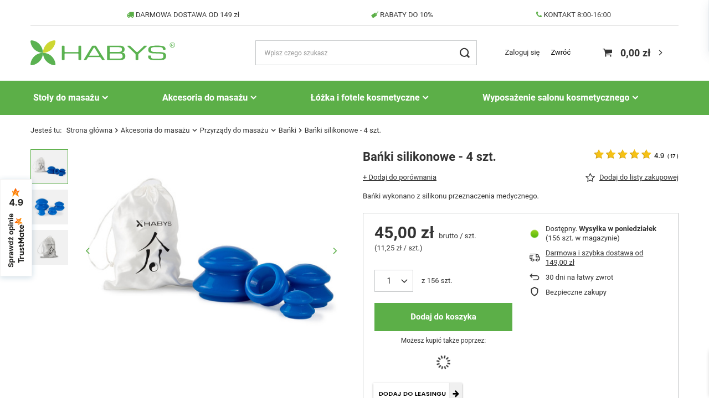
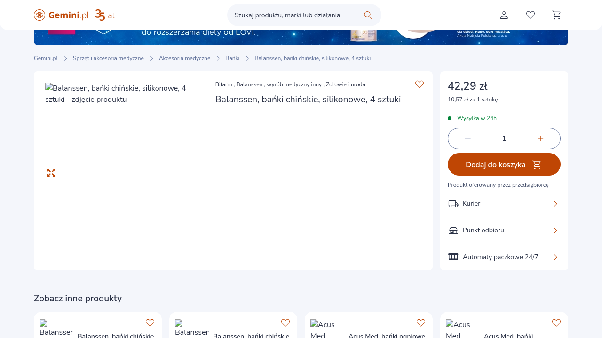
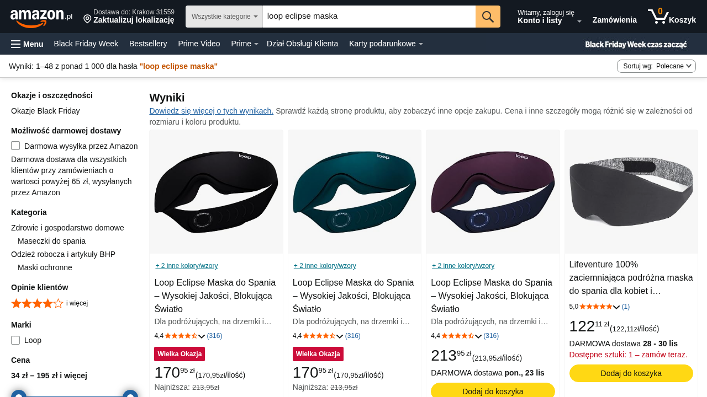
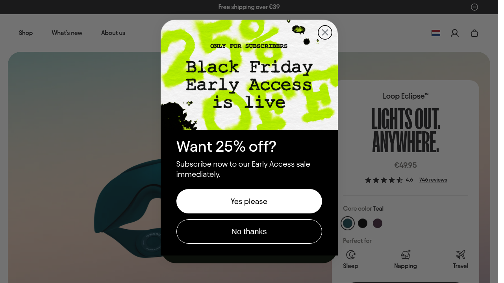

Банки Habys + маска Loop Eclipse: де купити, щоб дійшло найшвидше
1) Силіконові банки Habys, 4 шт.
| Варіант | Ціна | Доставка | Прийде | Paczkomat / кур'єр | Самовивіз у Кракові |
|---|---|---|---|---|---|
| Мій вибірНайшвидше habys.pl (офіційний) | 45,00 zł | Paczkomat 13,99 · кур'єр 14,99 · DPD-пункт 9,99 · Orlen 12,99 · GLS-пункт 9,49 (безкоштовно від 149 zł) | вт 24.11 (відправка пн 23.11) | обидва | ні (склад у Jasło) |
| Allegro, продавець HABYS-PL | ~45–49,90 zł з доставкою* | з Smart може бути 0 zł | швидше за все вт 24.11* (той самий склад) | обидва* | ні |
| Близький аналог Gemini.pl, Balanssen 4 шт. | 42,29 zł | вартість не побачив | "Wysyłka w 24h" → ймовірно пн 23 – вт 24.11* | кур'єр, пункт, automaty 24/7 | не перевірено (аптеки Gemini в Małopolsce є, резерв через застосунок) |
* не перевірено напряму: Allegro заблокувало цей комп'ютер, тож ціна взята з результатів пошуку. Дата для Gemini — моя оцінка за написом "Wysyłka w 24h".
Мій вибірНайшвидше habys.pl — Bańki silikonowe 4 szt. (T-KIXIN010)
Це саме той товар, ціна як у посиланні, і дата не гірша за інших. Мінус: доставка коштує ~14 zł, а самовивозу немає.
Середні: двоє пишуть, що банки спочатку трохи тверді, потім розминаються. Інших зауважень немає.
Погані: немає жодного відгуку на 1–2★.
Скріншот

Allegro — Habys, продавець HABYS-PL
Той самий товар від того самого продавця. З Allegro Smart доставка може бути безкоштовною, тож вийде дешевше за habys.pl, якщо Smart є. Але Allegro заблокувало цей комп'ютер, тому дату, ціну й відгуки я не бачив. Перевір у себе: пошук на Allegro.
Близький аналог Gemini.pl — Balanssen, bańki chińskie silikonowe, 4 szt.
Це не точна копія: найменша банка більша, ніж у Habys. Має сенс, лише якщо Gemini привезе в пн 23.11, а це не підтверджено.
Скріншот

2) Маска для сну Loop Eclipse
| Варіант | Ціна | Доставка | Прийде | Paczkomat / кур'єр | Самовивіз у Кракові |
|---|---|---|---|---|---|
| Найшвидше Amazon.pl, колір Plum (B0HN7RW1FD) продає Loop Earplugs PL, відправляє Amazon ✅ | 213,95 zł | 0 zł | пн 23.11 | обираєш при оформленні (InPost або кур'єр) | ні |
| Мій вибір Amazon.pl, Black (B0H3V1J9MD) або Teal (B0HF7XYHF9) Black: продає Loop Earplugs PL, відправляє Amazon ✅ · Teal: продавця не побачив ⚠️ | 170,95 zł (найнижча за 30 днів 213,95) | 0 zł | вт 24.11 | обираєш при оформленні (InPost або кур'єр) | ні |
| loopearplugs.com (офіційний, з Бельгії) | €49,95 (PL-версія: ~213,95 zł) | стандарт 0 zł (від €39) · експрес €18,95 | стандарт: чт 26 – пн 30.11 · експрес: вт 24 – ср 25.11 | кур'єр із трекінгом | ні |
Сайт Loop відправляє замовлення, зроблені після 12:00, наступного робочого дня, тож сьогоднішнє замовлення поїде в пн 23.11. За пошуковиком Loop магазинів у Польщі немає.
Мій вибір Amazon.pl — Loop Eclipse, Black або Teal
На 43 zł дешевше за найшвидший варіант, а приходить лише на день пізніше. Знижка ~20% (Amazon позначає її «Wielka Okazja») — звичайний розпродаж, а не підозріло низька ціна. Black продає Loop Earplugs PL з відправкою від Amazon (я це бачив). Мінус: продавця Teal я не побачив, тож перед покупкою Teal глянь на рядок «Sprzedawane przez» (див. нижче, «Чи це оригінал»).
Середні (3★, сайт Loop): найчастіше пишуть, що маска сповзає з голови вночі, навіть коли ремінець затягнутий (3 відгуки). Ще пишуть, що вона об'ємна спереду й незручна, якщо спати на боці (2–3).
Погані: 1★ немає, 2★ лише 3 відгуки. В одного внизу пропускає світло. В іншого піна сплющилася приблизно за місяць сну на боці (Loop пропонує заміну за 2-річною гарантією).
Скріншот видачі Amazon

Найшвидше Amazon.pl — Loop Eclipse, Plum
Продає Loop Earplugs PL (офіційний магазин бренду на Amazon), відправляє склад Amazon, повернення до 31.01.2027. 213,95 zł, доставка безкоштовна, прийде в пн 23.11. Бери, якщо маска потрібна вже в понеділок. Мінус: на 43 zł дорожче, і колір лише сливовий.
loopearplugs.com — офіційний сайт
Плюси: 100 днів на повернення і 2 роки гарантії. Мінуси: стандартна доставка прийде між чт 26 і пн 30.11, а експрес за €18,95 — у вт–ср. Повільніше й дорожче за Amazon.
Скріншот

Чи це оригінал? Перевірка за 30 секунд
Хто продає (Amazon.pl, 20.11, ~21:25–21:30)
| Колір | ASIN | Ціна | Продає | Відправляє |
|---|---|---|---|---|
| Sugar Plum | B0HN7RW1FD | 213,95 zł | Loop Earplugs PL ✅ (той самий акаунт виклав офіційну відеоінструкцію Loop на картці) | Amazon ✅ |
| Czarny (Black) | B0H3V1J9MD | 170,95 zł (−20%) | Loop Earplugs PL ✅ | Amazon ✅ |
| Turkusowy (Teal) | B0HF7XYHF9 | 170,95 zł (−20%) | не побачив ⚠️ — ймовірно, Loop Earplugs PL | не побачив |
Інші товари Loop на Amazon.pl теж продає «Loop Earplugs PL» з відправкою від Amazon (так видно в постах на pepper.pl).
Що каже сам Loop
На офіційній сторінці Fraud detection statement Loop пише:
- Купувати тільки в офіційних каналах: на сайті loopearplugs.com або у перевірених продавців на Amazon і bol.com.
- На маркетплейсах шукати «Sold by Loop Earplugs» або явно перевіреного продавця.
- Покупка в неофіційних сайтів або неперевірених сторонніх продавців — без гарантії Loop, без підтримки, без повернення через Loop.
- Червоні прапорці: незнайомий магазин, надто низька ціна, дивні способи оплати, немає нормальних контактів. Фейкові сайти й реклама копіюють фото й логотипи Loop.
Окремого списку авторизованих продавців для Польщі чи ЄС Loop публічно не дає. У B2B-умовах є «Authorized Reseller», але сам список і правила — лише на запит. Офлайн-магазинів у Польщі пошук магазинів Loop не показує. Серійних номерів, QR-перевірки чи інструкції «як відрізнити підробку» на офіційних сторінках немає.
Як перевірити самому
- Перед покупкою: під кнопкою «Kup teraz» має бути «Sprzedawane przez: Loop Earplugs PL» і «Wysyłka z: Amazon». Інший продавець або відправка не від Amazon — не бери.
- Ціна: 170,95 zł — це знижка ~20% від 213,95 (на Amazon «Wielka Okazja»). Тривожно було б, якби Loop Eclipse коштувала ~50–100 zł.
- Коробка: брендована упаковка Loop, всередині одна маска Loop Eclipse. На ремінці логотип «loop», маска виглядає як на фото Loop. Сторінка-інструкція: loopearplugs.com/pages/myeclipse.
- Якщо щось не так: Amazon дає повернення до 31.01.2027, а у Loop 2 роки гарантії, якщо продавець офіційний. Підозрілий лістинг можна повідомити Loop через сторінку контактів.
Чого не вдалося перевірити
- Allegro заблокувало цей комп'ютер ("You have been blocked"). Тому ціни та дати з Allegro не перевірені.
- Ceneo показало капчу. Я її не проходив.
- Decathlon, Kaufland, gdziepolek.pl, aptekazawiszy.pl закриті захистом Cloudflare.
- Amazon.pl пускає лише на кілька сторінок, потім повертає помилку. Продавця Plum і Black я побачив (Loop Earplugs PL, відправка Amazon). Продавця Teal, платну швидшу доставку і тексти відгуків Amazon на 1–3★ — ні.
- Loop не публікує списку авторизованих продавців для PL/ЄС і не дає перевірки за серійним номером чи QR.
- Магазинів у Кракові з цими товарами не знайшов. Loop у Польщі офлайн не продається, Habys має лише склад у Jasło. Аналогічні банки в Rossmann, Hebe чи аптеках Кракова не перевірені.